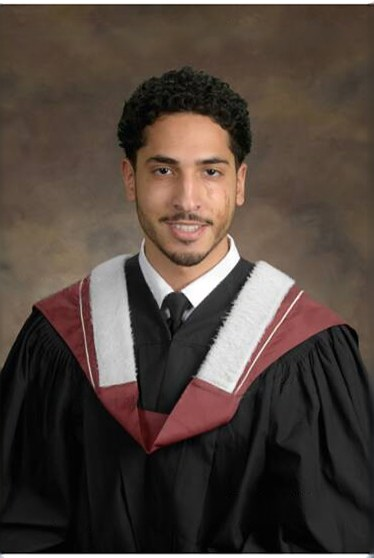

Bido Mohamed
Hello! I'm Bido, a recent Mechanical Engineering graduate from the University of Toronto with a minor in Robotics & Mechatronics. My work focuses on building autonomous systems that integrate perception, planning, and control.
For my undergraduate thesis at the Robotics & Automation Laboratory, supervised by Prof. Andrew Goldenberg, I developed a modular perception-to-grasp pipeline for autonomous dish loading. Before that, I interned at e-Zinc on electrochemical optimization for zinc-air batteries.
On campus, I lead perception software at Robotics for Space Exploration (RSX) and design electrical systems for the Supermileage Team (UTSM). Based in Toronto, open to relocation. Currently seeking new graduate roles in robotics and AI.

News
- May 2026 Graduated from the University of Toronto with a BASc in Mechanical Engineering!
- Jan 2026 Placed 4th at UTEK 2T6 Senior Design. Built a wearable low-vision reader with OCR and text-to-speech.
- Sep 2025 Started undergraduate thesis in the Robotics & Automation Lab, supervised by Prof. Andrew Goldenberg.
- Sep 2025 Joined Robotics for Space Exploration as Arm Software Project Lead.
- Jan 2025 Won 2nd place at UTEK 2T5 Senior Design with a wildfire response rover.
- Aug 2024 Started R&D internship at e-Zinc.
Research
Read more
The system integrates YOLOv8 object detection with GRConvNet for grasp prediction from depth maps. A custom PlaceNet CNN predicts optimal placement positions in the dishwasher rack. Pick order is optimized using a Held-Karp dynamic programming TSP solver to minimize arm travel.
The hybrid pipeline includes classical fallbacks to ensure robustness when learning models fail. Grasp weights were tuned via differential evolution.
Results: 100% grasp planning success on 100 isolated trials (88% suction-based with idealized contact in sim, 12% parallel-jaw top-down on cups); 27.5% object placement across 20 cluttered end-to-end trials; 0.995 mAP50 detection on the synthetic dataset; 85% classification accuracy under hybrid segmentation.
Read more
Redesigned the benchtop test fixture, a scaled-down replica of the production zinc-air cell, to make additive screening both faster and leak-free: adjustable electrode spacing (0.5 to 5 mm), mechanically stable wiper contacts, a simplified charge-only flow that removed previous leak points, and an integrated hydrogen sensor mount for real-time safety monitoring.
Also designed a custom PCB and firmware for motor power-draw measurement to validate zinc adhesion strength correlation.
Results: Lead additive candidate raised coulombic efficiency by 7 points over baseline; redesigned fixture cut experimental lead time by 4 weeks per cycle and ran leak-free across all subsequent test campaigns.
Extracurriculars
Read more
The keyboard-typing pipeline uses ArUco marker detection with Intel RealSense depth cameras to localize keyboards in 3D space. It converts 2D pixel coordinates to 3D world positions, validates keyboard geometry (planarity, dimensions, aspect ratio), and interpolates individual key positions for arm targeting.
Trained a custom YOLO model via Roboflow as a complementary detector for keyboard keys. The pipeline integrates with ROS 2 publish/subscribe for real-time arm motion planning, with median depth filtering (5x5 window), fallback camera models, and throttled logging for stable operation at 10+ Hz.
Read more
Designed a modular PCB stack for the vehicle's front electrical node, with plug-in daughterboards covering CAN bus communication, multi-voltage power distribution (12 V, 7 V, 5 V rails), and analog plus digital sensor input conditioning. The modular format lets a single board be swapped without touching the rest of the wiring harness.
Owned the full subsystem lifecycle: component selection, KiCad PCB layout, 3D CAD housing design, unit testing, and integration into the vehicle's electrical architecture.
Read more
Built a 4WD autonomous rover that navigates to a fire source and delivers water suppression. Reactive obstacle avoidance via ultrasonic sensing and a hand-tuned state machine in embedded C, driving the DC motors directly.
Weatherproof chassis built for field readiness; full prototype delivered in 48 hours and met every competition requirement under tight hardware and time constraints.
Read more
Camera image to spoken output runs through an ESP32-CAM streamer, a host-side Tesseract OCR pass, and a TTS engine. Playback controls (pause, rewind, speed) on the wearable let the user navigate longer passages.
Aimed at the 2.2 billion people worldwide with vision impairment, as an affordable alternative to expensive assistive devices for reading signs, menus, medication labels, and everyday documents.
Projects
Read more
The system uses MOG2 background subtraction and MeanShift tracking with adaptive EMA smoothing for robust frame-by-frame position estimation. A homography transform converts pixel coordinates to real-world positions on the 8 ft x 4 ft maze.
Designed as a 6-layer modular architecture: sensor input, perception, event detection, state management, data logging, and visualization. Automatically detects wall collisions, stops, and manual interventions.
Built a Streamlit dashboard with interactive path visualization, replay, heatmaps, and a gamified leaderboard. Distance filtering uses 1-second chunking, 30 mm dead-band, and 400 mm teleport cap to eliminate jitter.
Results: Validated against AprilTag ground truth across 2,991 frames: 99.0% bounding-box accuracy, mean position error of 64.28 mm, 30 fps on CPU with no GPU required. 24 unit tests covering all major modules.
Read more
Contest 1: Built a frontier-style reactive exploration controller on top of slam_toolbox, using LiDAR sectoring and a prioritized finite state machine to drive the TurtleBot4 to autonomously map a maze without operator input. Implemented closed-loop feedback control with angle normalization and motion primitives for forward movement, rotation, and obstacle avoidance.
Contest 2: Integrated a YOLOv8 perception pipeline with AprilTag localization for object detection and targeting. Used Nav2 for path-optimized navigation and MoveIt2 for inverse kinematics and arm motion planning on the SO101 (LeRobot) manipulator.
Full ROS 2 workspace with launch files, URDF descriptions, and MoveIt2 configuration for both Gazebo simulation and real hardware deployment.
Read more
Fine-tuned a Faster R-CNN model with a ResNet-50 backbone and Feature Pyramid Network (FPN) for dishware detection. Used RoI Align for precise region alignment with custom anchor sizes (16 to 512 pixels) and dual prediction branches for bounding-box regression and class prediction.
Trained on a curated dataset of 245 images from COCO, LVIS, and Open Images with a 70/15/15 stratified split. Data augmentation included random flips, crops, and brightness jitter.
Results: Faster R-CNN achieved 0.27 AP50 vs. YOLOv8n's 0.14 AP50 on validation. Strong detection of plates, bowls, and cups; identified challenges with small utensils due to scale and occlusion. Generalization testing showed an average of 13.17 detections per image on unseen real-world data with confidence above 0.60.
Read more
Designed an AISI 1018 steel lever-based tensioner with a flat coil spring providing approximately constant torque over 25 mm of cable travel. A ratchet mechanism with 1.5 mm discrete steps and a pawl lock prevents back-drive under stall conditions (door slam events at 710 N).
Performed FEA stress and fatigue analysis on all critical components (lever, pivot pin, pawl-ratchet interface), verified with hand calculations. Achieved safety factors above 1.25 across all load cases while maintaining a smaller footprint than the existing production design.
Results: All functional requirements met. Design validated for 50,000+ cycle durability with safety factors above 1.25 across all load cases; manufacturing-feasible geometry identified for stamping plus CNC finishing.
Technical Skills
- Programming Languages
- Python, C++, Embedded C (Arduino, ESP32), MATLAB
- Robotics & Simulation
- ROS 2 (Jazzy/Humble), Nav2, MoveIt2, slam_toolbox, AprilTag, Gazebo, PyBullet
- ML & Computer Vision
- PyTorch, YOLOv8, GRConvNet, Faster R-CNN, OpenCV, RealSense SDK, Tesseract OCR
- Hardware & CAD
- SolidWorks (CSWA), ANSYS FEA, KiCad PCB design, CAN bus